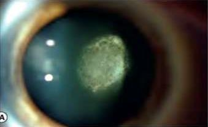
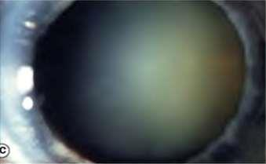
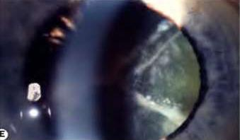
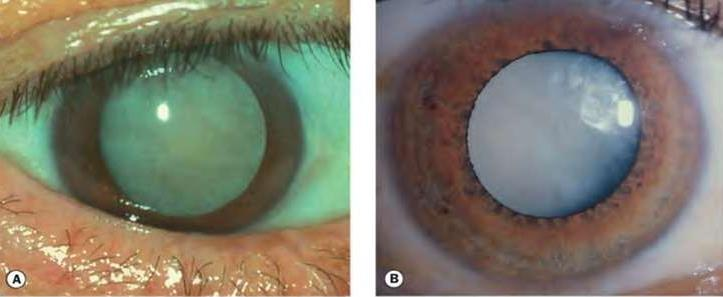
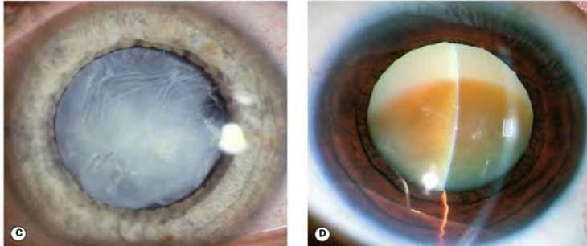
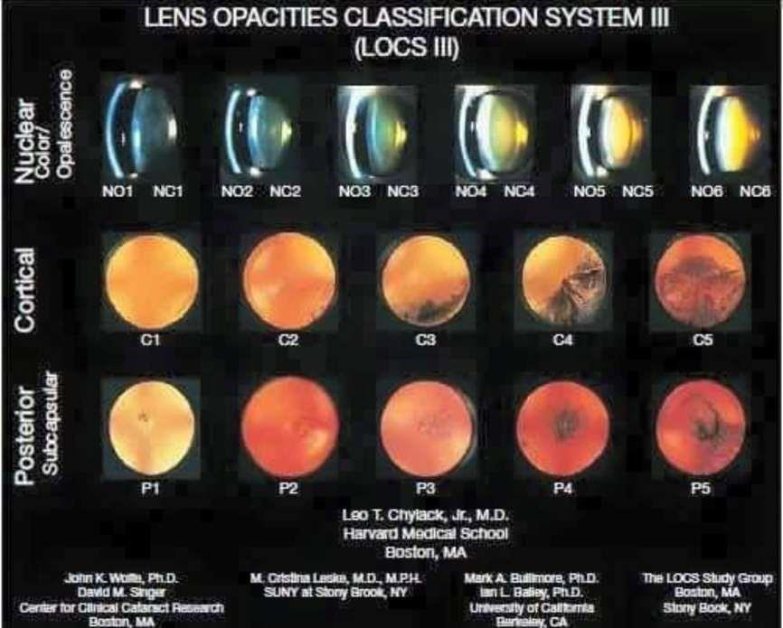

Cataract · Morphology
Cataract Morphology

A: posterior subcapsular cataract.

C: nuclear cataract.

E: cortical cataract.

A and B: mature cataract

C: hyper mature cataract. D: morgagnian cataract.

Lens Opacities Classification System III (LOCS III)